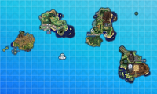

A região de Alola é o cenário principal dos jogos Pokémon Sun e Moon e seus remakes Ultra Sun e Ultra Moon, inspirada no Havaí. Alola é formada por ilhas tropicais com praias, vulcões, florestas e montanhas, oferecendo aos jogadores um ambiente de exploração totalmente diferente das regiões anteriores. O jogador começa sua jornada em Iki Town, recebendo seu primeiro Pokémon do Professor Kukui — Rowlet, Litten ou Popplio — definindo a equipe inicial. Alola introduz o sistema de Trials no lugar dos ginásios tradicionais, onde os jogadores enfrentam desafios únicos e Totem Pokémon. Cada ilha de Alola possui locais distintos, como Melemele Island, com praias e pequenas vilas, Akala Island, com florestas densas e cidades maiores, e Ula’ula Island, famosa por suas montanhas e desafios mais avançados. A região apresenta também Pokémon lendários como Solgaleo, Lunala e Necrozma.
